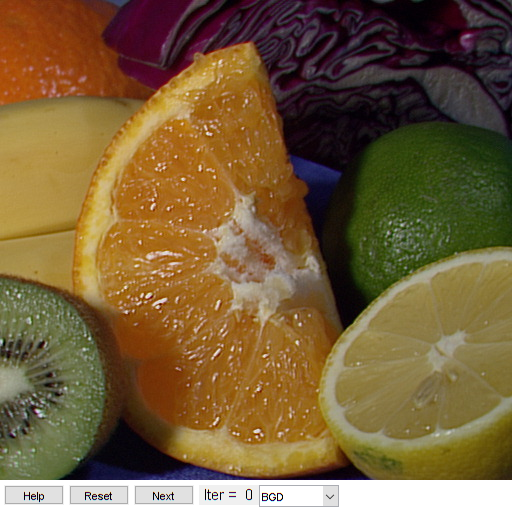

GrabCut segmentation demo
Interactive foreground extraction using the GrabCut algorithm.
This program demonstrates GrabCut segmentation: select an object in a region and then grabcut will attempt to segment it out.
Sources:
Contents
Theory
GrabCut algorithm was designed by Carsten Rother, Vladimir Kolmogorov and Andrew Blake from Microsoft Research Cambridge, UK. in their paper:
- "GrabCut": interactive foreground extraction using iterated graph cuts http://dl.acm.org/citation.cfm?id=1015720
An algorithm was needed for foreground extraction with minimal user interaction, and the result was GrabCut.
How it works from user point of view? Initially user draws a rectangle around the foreground region (foreground region should be completely inside the rectangle). Then algorithm segments it iteratively to get the best result. Done. But in some cases, the segmentation won't be fine, like, it may have marked some foreground region as background and vice versa. In that case, user need to do fine touch-ups. Just give some strokes on the images where some faulty results are there. Strokes basically says: "Hey, this region should be foreground, you marked it background, correct it in next iteration", or its opposite for background. Then in the next iteration, you get better results.
See the image below. First player and football is enclosed in a blue rectangle. Then some final touchups with white strokes (denoting foreground) and black strokes (denoting background) is made. And we get a nice result.

So what happens in background ?
- User inputs the rectangle. Everything outside this rectangle will be taken as sure background (That is the reason it is mentioned before that your rectangle should include all the objects). Everything inside rectangle is unknown. Similarly any user input specifying foreground and background are considered as hard-labelling which means they won't change in the process.
- Computer does an initial labelling depeding on the data we gave. It labels the foreground and background pixels (or it hard-labels)
- Now a Gaussian Mixture Model (GMM) is used to model the foreground and background.
- Depending on the data we gave, GMM learns and create new pixel distribution. That is, the unknown pixels are labelled either probable foreground or probable background depending on its relation with the other hard-labelled pixels in terms of color statistics (It is just like clustering).
- A graph is built from this pixel distribution. Nodes in the graphs are pixels. Additional two nodes are added, Source node and Sink node. Every foreground pixel is connected to source node and every background pixel is connected to sink node.
- The weights of edges connecting pixels to source node/end node are defined by the probability of a pixel being foreground/background. The weights between the pixels are defined by the edge information or pixel similarity. If there is a large difference in pixel color, the edge between them will get a low weight.
- Then a mincut algorithm is used to segment the graph. It cuts the graph into two separating source node and sink node with minimum cost function. The cost function is the sum of all weights of the edges that are cut. After the cut, all the pixels connected to source node become foreground and those connected to sink node become background.
- The process is continued until the classification converges.
It is illustrated in below image (Image Courtesy: http://www.cs.ru.ac.za/research/g02m1682/)

Code
This is an interactive tool using grabcut. You can also watch this youtube video on how to use it.
function varargout = grabcut_demo_gui(im) % load an image if nargin < 1 src = imread(fullfile(mexopencv.root(),'test','fruits.jpg')); elseif isempty(im) fmts = imformats(); filtspec = strjoin(strcat('*.', [fmts.ext]), ';'); [fn,fp] = uigetfile(filtspec, 'Select an image'); if fp==0, error('No file selected'); end src = imread(fullfile(fp,fn)); elseif ischar(im) src = imread(im); else src = im; end % we expect an 8-bit RGB image validateattributes(src, {'uint8'}, ... {'ndims',3, 'size',[nan nan 3], 'nonempty'}); % initialize app state, and create the UI app = initApp(src); h = buildGUI(src, app); % hook event handlers opts = {'Interruptible','off', 'BusyAction','cancel'}; set(h.pop, 'Callback',@onChange); set(h.btn(1), 'Callback',@onHelp); set(h.btn(2), 'Callback',@onReset); set(h.btn(3), 'Callback',@onNext, opts{:}); set(h.fig, 'WindowKeyPressFcn',@onType, ... 'WindowButtonDownFcn',@onMouseDown, opts{:}); % return graphics handles if nargout > 0, varargout{1} = h; end % ========== Event Handlers ========== function onHelp(~,~) %ONHELP Display usage help dialog helpdlg({ 'This program demonstrates GrabCut segmentation:' 'select an object in a region and then grabcut' 'will attempt to segment it out.' '' 'Select a rectangular area around the object you' 'want to segment.' '' 'Then press "next" to segment the object (once or a few times).' '' 'For finer touch-ups, set the mode and draw lines on the areas you' 'want, to mark them as foreground/background (sure or probable),' 'then press "next" again.' '' 'Hot keys:' 'ESC - quit the program' 'r - restore the original image' 'n - next iteration' 'left mouse button - First set rectangle, then set pixels' ' as either BGD/FGD/PR_BGD/PR_FGD depending on selected' ' mode in dropdown menu.' }); end function onReset(~,~) %ONRESET Event handler for reset button app.mask(:) = 0; app.bgdModel(:) = 0; app.fgdModel(:) = 0; app.rect = zeros(0,4); app.rectxy = zeros(0,2); app.pts = repmat({zeros(0,2)}, [1 4]); app.iterCount = 0; app.isInitialized = false; set(h.txt, 'String','Iter = 0'); set(h.img, 'CData',app.img0); set(h.rect, 'XData',NaN, 'YData',NaN); set(h.line(:), 'XData',NaN, 'YData',NaN); drawnow; end function onNext(~,~) %ONNEXT Event handler for next button if app.isInitialized % set pixels in GC mask using drawing points if any(~cellfun(@isempty, app.pts)) setLblsInMask(); end % continue using current mask tic [app.mask, app.bgdModel, app.fgdModel] = cv.grabCut(... app.img0, app.mask, 'Mode','Eval', 'IterCount',1, ... 'BgdModel',app.bgdModel, 'FgdModel',app.fgdModel); toc elseif any(~cellfun(@isempty, app.pts)) % set foreground pixels in GC mask using rectangle setRectInMask(); % set pixels in GC mask using drawing points setLblsInMask(); % init using mask tic [app.mask, app.bgdModel, app.fgdModel] = cv.grabCut(... app.img0, app.mask, 'Mode','InitWithMask', 'IterCount',1); toc elseif ~isempty(app.rect) % init using rectangle rect = app.rect - [1 1 0 0]; tic [app.mask, app.bgdModel, app.fgdModel] = cv.grabCut(... app.img0, rect, 'Mode','InitWithRect', 'IterCount',1); toc else disp('First select object to segment by drawing a rectangle'); return; end % mark mask as initialized, and increment counter app.isInitialized = true; app.iterCount = app.iterCount + 1; % show result showImage(); end function onType(~,e) %ONTYPE Event handler for key press on figure % handle keys switch e.Key case {'q', 'escape'} close(h.fig); case 'h' onHelp([],[]); case 'r' onReset([],[]); case 'n' onNext([],[]); case {'add', 'subtract'} % adjust brush thickness if strcmp(e.Character, '+') app.thick = min(app.thick + 2, 40); elseif strcmp(e.Character, '-') app.thick = max(app.thick - 2, 1); end set(h.line(:), 'MarkerSize',app.thick*5.4); case {'1', '2', '3', '4'} % set brush value app.currIdx = str2double(e.Key); set(h.pop, 'Value',app.currIdx); end end function onChange(~,~) %ONCHANGE Event handler for UI controls % change current GC mask drawing value: BGD/FGD/PR_BGD/PR_FGD app.currIdx = get(h.pop, 'Value'); end function onMouseDown(~,~) %ONMOUSEDOWN Event handler for mouse down on figure % ignore anything but left mouse clicks if ~strcmp(get(h.fig,'SelectionType'), 'normal') return; end % one of two phases: drawing rectangle, or free-drawing of points if isempty(app.rect) % select and draw rectangle select_rectangle(); if isempty(app.rect), return; end set(h.rect, 'XData',app.rectxy(:,1), 'YData',app.rectxy(:,2)); else % attach event handlers, and change mouse pointer set(h.fig, 'Pointer','circle', ... 'WindowButtonMotionFcn',@onMouseMove, ... 'WindowButtonUpFcn',@onMouseUp); end end function onMouseMove(~,~) %ONMOUSEMOVE Event handler for mouse move on figure % get current point and append it app.pts{app.currIdx}(end+1,:) = getCurrentPoint(); % update corresponding graphic line set(h.line(app.currIdx), ... 'XData',app.pts{app.currIdx}(:,1), ... 'YData',app.pts{app.currIdx}(:,2)); end function onMouseUp(~,~) %ONMOUSEUP Event handler for mouse up on figure % detach event handlers, and restore mouse pointer set(h.fig, 'Pointer','arrow', ... 'WindowButtonMotionFcn','', ... 'WindowButtonUpFcn',''); end % ========== Helper Functions ========== function showImage() out = app.img0; if app.isInitialized % zero-out background pixels if true binMask = repmat(app.mask == 0 | app.mask == 2, [1 1 3]); out(binMask) = 0; else binMask = (app.mask == 1 | app.mask == 3); out = cv.bitwise_and(out, out, 'Mask',binMask); end end set(h.img, 'CData',out); set(h.txt, 'String',sprintf('Iter = %2d',app.iterCount)); drawnow; end function setRectInMask() % convert rectangle to binary mask rect_mask = poly2mask(app.rectxy(:,1), app.rectxy(:,2), ... app.sz(1), app.sz(2)); % set foreground pixels in GC mask using rectangle app.mask(:) = 0; % BGD app.mask(rect_mask) = 3; % PR_FGD end function setLblsInMask() % set pixels in GC mask from drawing points: BGD, FGD, PR_BGD, PR_FGD for i=1:4 app.mask = cv.circle(app.mask, app.pts{i}-1, app.thick, ... 'Color',uint8(i-1), 'Thickness','Filled'); end % clear drawing points after being processed app.pts = repmat({zeros(0,2)}, [1 4]); set(h.line(:), 'XData',NaN, 'YData',NaN); end function select_rectangle() %TODO: consider IMRECT from image_toolbox % create rubberband box to prompt user for a rectangle p1 = getCurrentPoint(); % retrieve mouse location before dragging rbbox; % ignore its output (figure coordinates) pause(0.005); % CP might not get updated if selection was too fast p2 = getCurrentPoint(); % retrieve mouse location after dragging % form rectangle from two points: [x y w h] tl = min([p1;p2]); % top-left corner br = max([p1;p2]); % bottom-right corner if all((br-tl) > 1) % ignore small rectangles app.rect = [tl br-tl]; app.rectxy = [tl; tl+[app.rect(3) 0]; br; tl+[0 app.rect(4)]; tl]; end end function p = getCurrentPoint() % retrieve current mouse location p = get(h.ax, 'CurrentPoint'); p = p(1,1:2); % clamp to within image coordinates p = max(p, [1 1]); p = min(p, [app.sz(2) app.sz(1)]); end end % ========== Initializer functions ========== function app = initApp(img) %INITAPP Initialize app state app = struct(); app.img0 = img; % original image app.sz = size(img); % image size app.mask = zeros(size(img,1), size(img,2), 'uint8'); % GC mask app.bgdModel = zeros(1,64); % GC background model app.fgdModel = zeros(1,64); % GC foreground model app.currIdx = 1; % drawing value (BGD/FGD/PR_BGD/PR_FGD) app.thick = 5; % drawing thickness app.pts = repmat({zeros(0,2)}, [1 4]); % drawing points of each brush app.rect = zeros(0, 4); % rectangle [x,y,w,h] app.rectxy = zeros(0,2); % rectangle points [TL;TR;BR;BL;TL] app.iterCount = 0; % iterations counter app.isInitialized = false; % whethet GC mask is initialized end function h = buildGUI(img, app) %BUILDGUI Creates the UI % parameters sz = size(img); sz(2) = max(sz(2), 350); % minimum figure width % build the user interface (no resizing to keep it simple) h = struct(); h.fig = figure('Name','GrabCut Demo', ... 'NumberTitle','off', 'Menubar','none', 'Resize','off', ... 'Position',[200 200 sz(2) sz(1)+29]); if ~mexopencv.isOctave() %HACK: not implemented in Octave movegui(h.fig, 'center'); end h.ax = axes('Parent',h.fig, ... 'Units','pixels', 'Position',[1 30 sz(2) sz(1)]); if ~mexopencv.isOctave() h.img = imshow(img, 'Parent',h.ax); else %HACK: https://savannah.gnu.org/bugs/index.php?45473 axes(h.ax); h.img = imshow(img); end %axis(h.ax, 'on'); h.btn(1) = uicontrol('Parent',h.fig, 'Style','pushbutton', ... 'Position',[5 5 60 20], 'String','Help'); h.btn(2) = uicontrol('Parent',h.fig, 'Style','pushbutton', ... 'Position',[70 5 60 20], 'String','Reset'); h.btn(3) = uicontrol('Parent',h.fig, 'Style','pushbutton', ... 'Position',[135 5 60 20], 'String','Next'); h.txt = uicontrol('Parent',h.fig, 'Style','text', 'FontSize',11, ... 'Position',[200 5 60 20], 'String','Iter = 0'); h.pop = uicontrol('Parent',h.fig, 'Style','popupmenu', ... 'Position',[260 5 80 20], 'String',{'BGD','FGD','PR_BGD','PR_FGD'}); % initialize lines (drawing and rectangle selection) clr = 'kwgrb'; % 'rbcmg' for i=1:4 h.line(i) = line(NaN, NaN, 'Color',clr(i), 'Parent',h.ax, ... 'LineStyle','none', 'Marker','.', 'MarkerSize',app.thick*5.4); end h.rect = line(NaN, NaN, 'Color',clr(5), 'Parent',h.ax, 'LineWidth',2); end